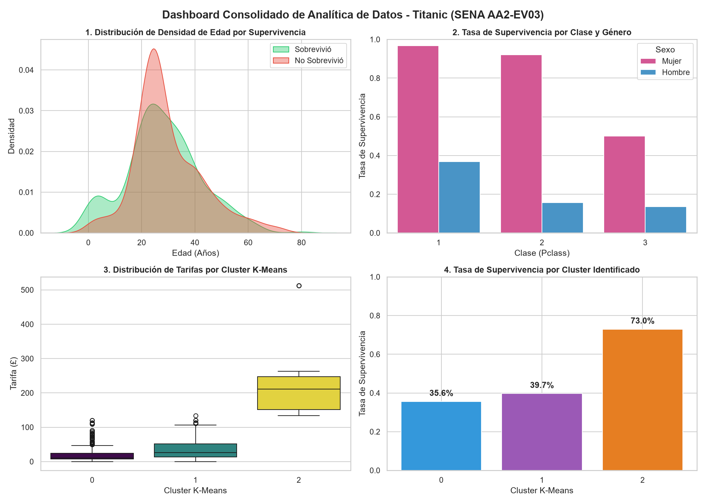

Total Pasajeros
891
Muestra 100% auditada
Supervivencia Global
38.4%
342 personas rescatadas
Mujeres 1ra Clase
96.81%
91 de 94 sobrevivieron
Hombres 3ra Clase
13.54%
47 de 347 sobrevivieron
Panel Visual Consolidado (2x2)
Integración de densidades biológicas, factores de estratificación socioeconómica y resultados de clustering.

🔍 Haz clic en la imagen para ampliar
1. Densidad Etaria
Pico evidente de supervivencia en niños menores a 10 años, cumpliendo la máxima de rescate prioritario.
2. Disparidad de Clase y Sexo
Supervivencia femenina superior al 90% en 1ra y 2da clase, contrastando con el 13.5% en hombres de 3ra.
3 y 4. Rendimiento por Cluster
El cluster premium (Cluster 2) alcanza el 73.0% de supervivencia, confirmando la ventaja económica en la emergencia.